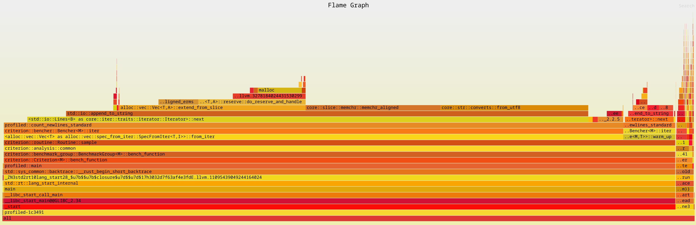
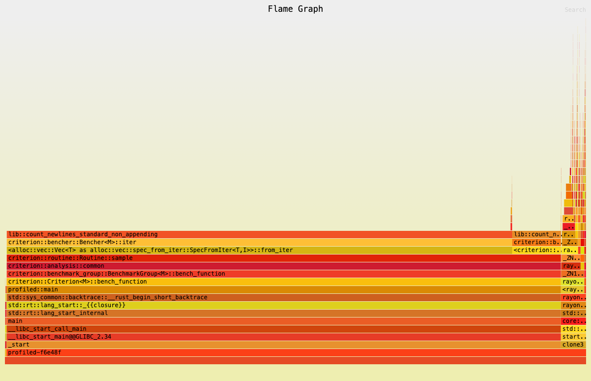

我们将尝试使用 Rust 来比较读取文件的各种不同方法。除了 wc -l 之外，我们将使用 criterion 对每个函数运行 10 次，然后取平均值。
以下基准测试的代码存放在 Benchmark code for Linux IO using Rust。
在以下代码中，BUFFER_SIZE 为 8192，NUM_BUFFERS 为 32。
原文: # Linux File IO using Rust](https://opdroid.org/rust-io.html)) by opdroid
测试机器细节
- Framework 16 笔记本，带有锐龙 7840 HS 处理器和 64 G 内存的电脑。电源已接通并启用了性能模式。（这个笔记本是一个模块化的笔记本）
- SSD: WD_BLACK SN850X 4000GB。使用Gnome Disks进行测试显示读取速度为3.6 GB/s(样本大小为1000MB,共100个样本)。
- 文件系统：btrfs
- 操作系统版本 (uname 结果)：Linux fedora 6.8.8-300. Fc 40. X 86_64 #1 SMP PREEMPT_DYNAMIC Sat Apr 27 17:53:31 UTC 2024 x 86_64 GNU/Linux
文件细节
- 未压缩大小：22G
- 行数：200,000,000
- 使用 btrfs 压缩（zstd）后的压缩大小：5.3G
对于不耐烦的读者：结果概述
| 读取方法 | 时间 (单位：秒) |
|---|---|
| Mmap with AVX512 | 2.61 |
| Mmap with AVX2 | 2.64 |
| io_uring with Vectored IO | 2.86 |
| Vectored IO | 2.89 |
| Mmap | 3.43 |
| io_uring | 5.26 |
| wc -l (baseline) | 8.01 |
| Direct IO | 10.56 |
| BufReader without appends | 15.94 |
| BufReader with lines().count() | 33.50 |
一个有趣的观察是，AVX512 需要 2.61 秒，文件大小约为 22G，而 SSD 基准测试显示读取速度为 3.6 GB/s。这意味着文件应该在大约 6 秒内被读取完毕。但 AVX512 的实现实际上是以约 8.4 GB/s 的速度读取文件。
这是怎么回事呢？比磁盘的读取速度都快不少？不科学啊？
原来 Fedora 使用了 btrfs 文件系统，它默认启用了 zstd 压缩。实际的磁盘上大小可以使用 compsize 命令来查看。
|
|
感谢这些优秀的人
- @alextjensen - 感谢他指导我使用
BufReader的合理默认值，并编译为本机架构。 - @aepau2 - 感谢他发现了
wc数字中的一个明显错误。我在使用wc测量之前忘记了清空缓存。 - @rflaherty71 - 感谢他建议我使用更多且更大的缓冲区（64 x 64k）。
- @daniel_c0deb0t - 感谢他建议我使用更大的缓冲区。
不使用我们编写的代码作为基线总是一个好主意，这样比较客观。
使用 wc -l 作为基线
|
|
在每个函数的末尾，我们使用以下命令重置文件缓存。我还没有弄清楚如何在 criterion 中使用 teardown 函数，以便这个时间不被计入总耗时。
|
|
方法1：使用 BufReader 读取文件，并使用 reader.lines().count() 计算行数
|
|
在我的机器上，这需要大约 36.5 秒的时间。

在 count_newlines_standard 函数中，字符串拼接（String appends）可能是导致性能问题的原因。
方法 2：使用 BufReader 读取文件并避免字符串拼接
|
|
在我的机器上，这大约需要 15.94 秒。这比使用字符串拼接的版本快了一半以上。
当我们查看火焰图时，我们可以确认字符串拼接的操作已经不存在了。

方法 3：使用 Direct I/O 读取文件
|
|
在我的机器上，这大约需要 35.7 秒。
方法 4：使用内存映射（Mmap）读取文件
|
|
在我的机器上，这大约需要 8.3 秒。
方法 5：使用内存映射（Mmap）和 AVX2 指令集读取文件
|
|
这个方法在我的机器上大约耗时 2.64 秒。
方法 6：使用内存映射（Mmap）和 AVX-512 指令集读取文件
|
|
这个方法在我的机器上大约需要 2.61 秒。
方法 7：使用向量 I/O 读取文件
|
|
在我的机器上，这大约需要 7.7 秒。
方法 8：使用 io_uring 读取文件
|
|
在我的机器上，这大约需要 10.5 秒。
方法 9：使用带有向量 I/O 的 io_uring 读取文件
|
|
在我的机器上，这大约需要 7.6 秒。